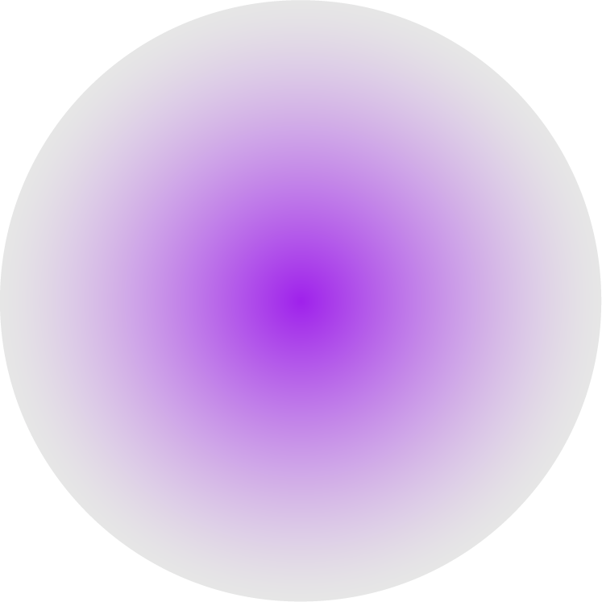

04 - ASTRONOMY - {Sunspot}Point ; Temporary Phenomena on The Sun's Photosphere
04 - ASTRONOMY - {Sunspot}Point ; Temporary Phenomena on The Sun's Photosphere
04 - ASTRONOMY - {Sunspot}Point ; Temporary Phenomena on The Sun's Photosphere
{태양 흑}점

태양의 광구에 존재하는 점
{태양}에서 주변보다 낮은 온도를 지니면서 강한 자기 활동을 보이는 영역이다. 대류가 이루어지지 않기 때문에 상대적으로 낮은 표면 온도를 지니고 어둡게 보이게 된다. 즉, {태양 흑}점은 스스로도 약 4000~5000K 라는 고온에서 매우 밝은 빛을 발하지만, 주변의 6000K 정도의 온도에 비해서는 낮기 때문에 상대적으로 어두운 점으로 관측된다. {태양 흑}점의 수는 약 11년 주기로 불규칙한 주기로 오르락내리락한다.
{태양}에서 주변보다 낮은 온도를 지니면서 강한 자기 활동을 보이는 영역이다. 대류가 이루어지지 않기 때문에 상대적으로 낮은 표면 온도를 지니고 어둡게 보이게 된다. 즉, {태양 흑}점은 스스로도 약 4000~5000K 라는 고온에서 매우 밝은 빛을 발하지만, 주변의 6000K 정도의 온도에 비해서는 낮기 때문에 상대적으로 어두운 점으로 관측된다. {태양 흑}점의 수는 약 11년 주기로 불규칙한 주기로 오르락내리락한다.

1. { }점은 다른 부분에 비해 상대적으로 어둡다. { }점은 보름달 밝기의 10배 정도 된다.
2. { }점이 많아지면 대재해가 일어난다는 미신이 있다.
3. { }점이 많을 땐, { }풍이 강해져 인공위성이 오작동하기도 한다.
4. 지금도 { }점이 늘어나고 있다.
5. 2025년 7월에 극대기를 맞이하여 { }점이 200개 정도 생길 것이라 예상하고 있다.
6. { }점이 늘어나면 우주비행이 위험해진다. 우주비행사가 위험에 빠지지 않도록 면밀한 { } 활동 관측이 필요하다.